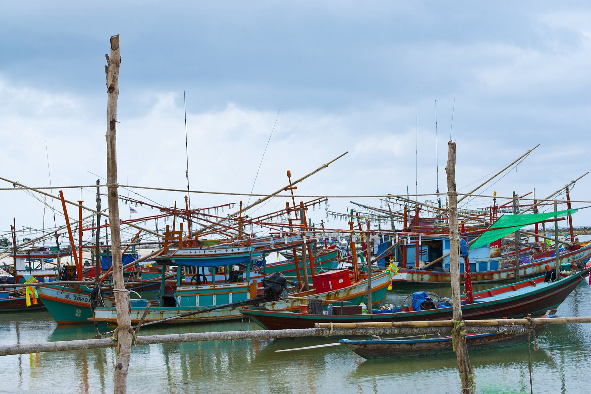
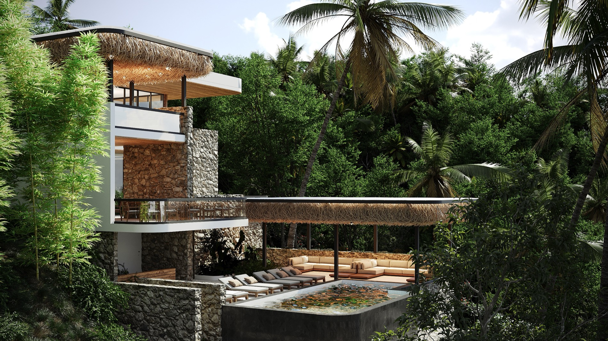

Most people meet Koh Phangan through its full-moon parties. The island we fell for is the other one: the calm, green north, where fishing boats still come in at dawn and the loudest thing at night is the sea.
When you set out to build a home, the land matters more than anything you put on it. We looked across the whole island before settling on a hillside above Chaloklum, a working fishing village on the northern coast. It is the part of Koh Phangan that has kept its character while the south grew louder, and it shapes everything about life at Gaia.
A village, not a resort strip
Chaloklum is still a real place. The harbour brings in the day's catch, the same families have run the same shops for decades, and the restaurants serve what was swimming that morning. There is a genuine community here, not a row of beach clubs built for a season and forgotten the next.
That matters for a home in a way it never could for a holiday. You are not buying into a postcard; you are buying into a neighbourhood with a rhythm of its own.

Calm bays and the island's best sunsets
The north coast faces west and slightly out, which gives Chaloklum two things the busier beaches cannot. The bays are sheltered and calm, good for swimming year round rather than only in season. And every evening the sun drops straight into the water in front of you, so the sunset is not somewhere you drive to. It is the view from the terrace.

Close to everything, far from the noise
Quiet does not mean cut off. From Gaia you are a short drive from the things that make daily life easy, while staying well above the crowds.
- Two minutes down the hill to the beach and the swimming bays
- Walking distance to the harbour, markets, cafés and restaurants of the village
- Around 40 minutes to the island's main pier and the Koh Samui ferry connections
- Yoga, wellness and the island's quieter retreats close at hand in the north
It is the balance most people are actually looking for: a real community and easy access during the day, and complete calm when you come home to the hill.
Getting to Chaloklum
Chaloklum sits on the north coast, about 40 minutes by road from the island's main pier at Thong Sala, where the ferries dock. Most people arrive via Koh Samui: fly into Samui airport, take the Lomprayah or Raja ferry across to Thong Sala (roughly 30 to 45 minutes on the water), then drive north. There are also direct boats from Surat Thani on the mainland for those flying into the larger Surat Thani airport. Once you are in the north, a scooter or car is the easiest way to get around, and Gaia sits a two-minute drive above Chaloklum Bay.
Frequently asked questions
Where is Chaloklum?
Chaloklum is a fishing village on the north coast of Koh Phangan, in tambon Ko Pha-ngan, Surat Thani, about 40 minutes by road from the island's main pier at Thong Sala.
Is Chaloklum a good place to live?
Yes, for people who want quiet, sea views and a genuine community. It is the calm, green north of the island, away from the full-moon party scene, with sheltered swimming bays, fresh seafood and easy access to the rest of Koh Phangan.
How do you get to Chaloklum?
Fly to Koh Samui, take a ferry to Thong Sala (around 30 to 45 minutes), then drive about 40 minutes north to Chaloklum. Direct boats also run from Surat Thani on the mainland.
Want to wake up on this coast? See the residences. The Gaia team.